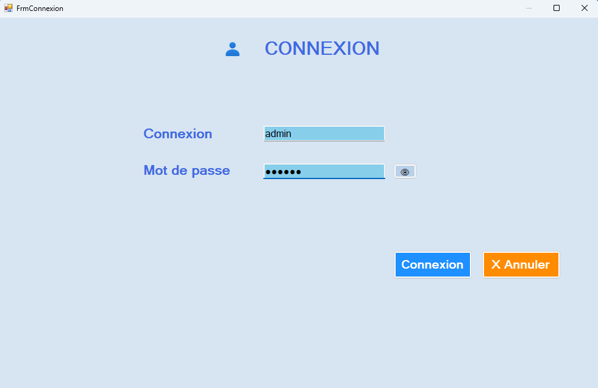
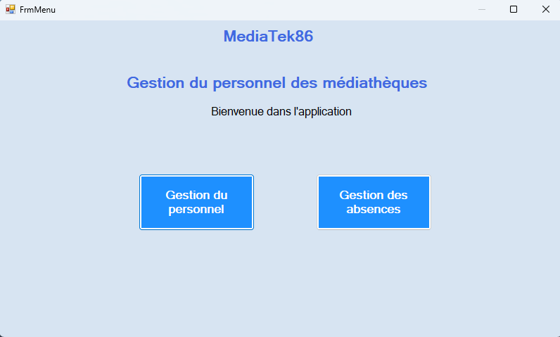
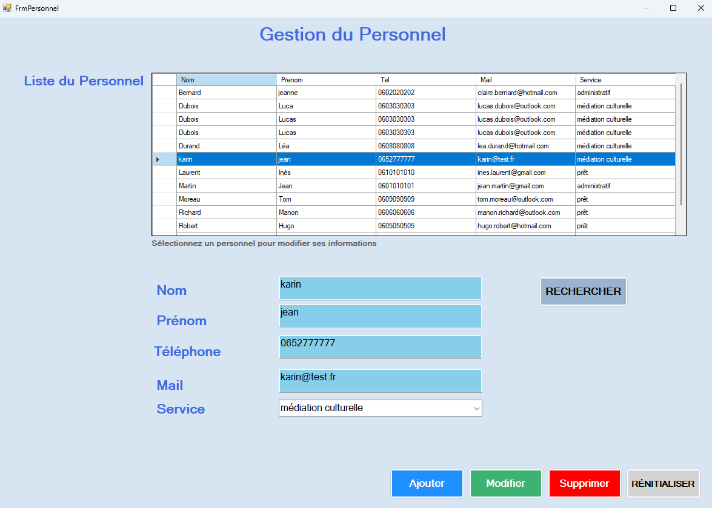
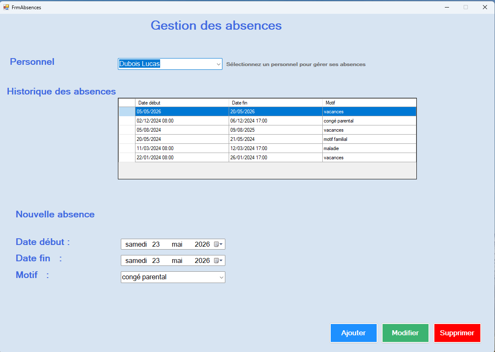

Gestion du personnel et des absences
Dans le cadre de l’atelier de professionnalisation du BTS SIO option SLAM, il nous a été confié le développement d’une application de bureau destinée à gérer le personnel des médiathèques, leurs affectations aux différents services ainsi que le suivi des absences pour l’entreprise fictive MediaTek86.
L’application a été développée en C# WinForms avec une architecture MVC et une base de données MySQL.
Captures de l’application




Compétences mobilisées
- Développement d’une application
- Gestion d’une base de données
- Architecture MVC
- Conception d’interfaces utilisateur
- Tests et validation
- Documentation technique
Documentation du projet
Le dépôt GitHub contient la documentation complète du projet :
- Présentation du contexte et des objectifs
- Architecture MVC
- Modèle conceptuel de données (MCD)
- Diagramme de paquetages
- Étapes de développement et commits
📄 Consulter le compte rendu du projet (PDF)
Vidéo de démonstration
← Retour au portfolio